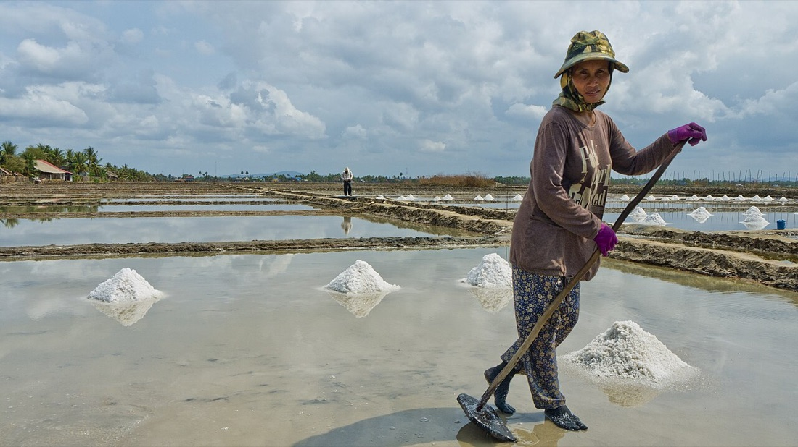

Zoom in on the eight samples on the bench and sort them. Then press Dissolve above the bench and make a solution.
Mixtures and pure substances
Most things around you are mixtures. Before you separate one, decide what kind of mixture it is.
Everything is made of tiny particles: atoms, or atoms joined together. A pure substance is only one substance, with nothing mixed in. It can be an element (one kind of atom) or a compound (atoms of different elements chemically joined together, always in the same ratio).
A mixture has two or more substances that are not chemically joined. Each substance keeps its own properties. So you can separate a mixture by physical methods, such as a filter or a magnet.
Two types of mixture
A phase is one part of a mixture that looks the same all through: a solid part, a liquid part or a gas part.
Extension · particles in a solid, a liquid and a gas
Look at the lens again. In gold, brass and salt (solids), the particles are held in a regular pattern, a lattice. In distilled water (a liquid), the particles touch and slide past each other: hydrogen bonds (the dashed lines) hold them close. In air (a gas), the particles are far apart and move fast in straight lines: the pull between them is very weak, so they do not stay together.
Dissolving
When salt dissolves in water, water particles crowd round the salt particles and carry them away from the grain. The salt particles spread out between the water particles, and you can no longer see the salt. The substance that dissolves is the solute. The liquid that does the dissolving is the solvent.
Salt is made of two kinds of ion (particles with an electric charge): sodium ions (+) and chloride ions (−). A substance that dissolves is soluble; a substance that does not dissolve is insoluble. When no more solute can dissolve, the solution is a saturated solution.
Now press Dissolve above the bench. Add salt to a beaker of water, one spoon at a time, then try sand. Watch the lens and read what the bench tells you.
Extension · look closely at dissolving
Each water particle has a slightly negative end (its oxygen atom) and a slightly positive end (its hydrogen atoms). Opposite charges attract: they pull towards each other. Watch the lens on the bench as the salt dissolves: which end faces each ion?
Extension · milk, a colloid
Milk is mostly water. Spread through it are tiny droplets of fat (the oily part of milk, as in butter) and small clumps of protein (a substance the body uses to grow, as in egg white).
The bits are too small to see with your eyes. They do not sink to the bottom or rise to the top, so milk is not a mechanical mixture. But they are much bigger than the particles in a solution, big enough to scatter light: a torch beam shows in water with a little milk in it (the Tyndall effect). A mixture like this is a colloid. The bench shows it: Milk (colloid), above the bench.
Run the filtration on the bench: muddy water first, then salt water. Answer the checks as you go.
Filtration
Separates an insoluble solid from a liquid.
Filtration separates an insoluble solid from a liquid, for example sand from water. The filter paper sits in a funnel. It is full of tiny holes. The liquid passes through. The solid pieces are too big, so they stay on the paper.
The solid left on the paper is the residue. The liquid that passes through is the filtrate.
On the bench, filter salt water too. Watch the paper, then test a drop of the filtrate.
So filtration uses two properties of substances. The first is size: big pieces stay on the paper. The second is solubility, how well a substance dissolves: a dissolved solid passes through with the liquid.
In real life
A tea bag and a coffee filter are filters. Water treatment works pass river water through deep beds of sand and gravel, which hold back the mud.
On the bench, evaporate salt solution. Then press Crystallisation above the bench and grow copper sulfate crystals.
Evaporation and crystallisation
Get a dissolved solid back out of a solution.
Evaporation separates a dissolved solid from a liquid. Heat the solution in an evaporating basin: the water turns into a gas and leaves, and the solid stays in the basin.
Water boils at 100 °C. Salt melts at 801 °C and boils at about 1,400 °C.
Water turns into a gas much more easily than salt: water is more volatile. Evaporation uses this property, volatility.
Crystallisation
Crystallisation gives large, pure crystals. You heat the solution only until it is saturated, not until it is dry. To test it, dip a glass rod into the solution and lift it out: if small crystals form on the rod, the solution is saturated. Then leave it to cool. A hot solution can hold more solute than a cold one, so crystals grow as it cools: crystallisation uses solubility. They are usually purer than the solid you started with, because other substances stay dissolved. So crystallisation is a way to purify a solid.
Run it on the bench, then answer.

In real life
Salt pans in Kampot, Cambodia (in the photo), and in Sinan, Korea, work the same way. Seawater is let into wide, shallow ponds. Over several weeks the sun evaporates most of the water. Salt crystals form in the shallow water that is left, and workers rake them into heaps.
Photo: douglasjonesjr, CC BY 2.0On the bench, connect the condenser and distil seawater. Fast? Try Fractional above the bench (extension).
Distillation
Get the pure liquid back out of a solution.
Simple distillation separates a solvent from a solution: for example, pure water from seawater. Heat the seawater in a round-bottomed flask: the water boils and becomes water vapour. Each liquid boils at its own temperature, its boiling point: water at 100 °C. A thermometer at the side arm reads the temperature of the vapour.
The vapour goes into the condenser, a glass tube with cold water flowing around it. There it condenses: it turns back into a liquid. The pure liquid you collect is the distillate. The salt stays in the flask.
Extension · fractional distillation
Fractional distillation separates miscible liquids (liquids that mix) with different boiling points, such as ethanol and water. A column of glass beads sits above the flask. Press Fractional above the bench and watch the thermometer and its graph.
In real life, an oil refinery separates crude oil into petrol, diesel and other fuels in fractionating towers about 50 m tall.
On the bench, make a chromatogram of the note's ink (X) and four pens (A to D). Find out which pen wrote the note.
Chromatography: who wrote the note?
Separates the dyes in an ink.
This note was found on the lab bench: “The test answers are in the blue cupboard.” Four people each have a black pen: A, B, C and D. Black ink is usually a mixture of dyes. Which pen has the same dyes as the note?
Paper chromatography separates the dissolved substances in a mixture. Small spots of ink go on a start line near the bottom of the paper. The paper stands in a solvent, such as water. The solvent moves up the paper and carries the dyes with it. Each dye travels a different distance, so the dyes separate. The pattern of spots you get is a chromatogram.
The paper does not move: it is the stationary phase. The solvent moves: it is the mobile phase. A dye that is attracted more strongly to the solvent than to the paper travels further. This attraction is called affinity.
Extension · Rf values
Rf = distance moved by the dye ÷ distance moved by the solvent. Both are measured from the start line. The same dye in the same solvent always has the same Rf, so an Rf value helps to identify a dye. The bench works one out: Rf values, above the bench.
In real life
Forensic scientists use chromatography to compare the ink on a document with the ink in a suspect's pen. Food scientists use it to check which colourings are in a sweet or a drink.
On the bench, decant water off sand. Then press Separating funnel above the bench and separate oil from water.
Decanting and the separating funnel
The denser part sinks; the less dense part stays on top.
Decanting: let the solid sink to the bottom and settle. Then pour the liquid slowly into another beaker, so the solid stays behind. A glass rod guides the liquid. Decanting is quick, but not perfect.
Oil and water do not mix: liquids that do not mix are immiscible. They form two layers. Liquids that mix completely, like ethanol and water, are miscible. Which liquid is on top depends on its density: the less dense liquid floats on the denser one. A separating funnel has a tap at the bottom: open it, and the bottom layer flows out.
On the bench, sort the cans at the recycling plant with a magnet. Then press Sieve above the bench and sieve the soil.
Sieve and magnet
Separate solids with a sieve or a magnet.
Some mixtures of solids can be separated by hand, using a property you can see or test: size, colour or magnetism. Pick pieces out with tweezers only when it is safe.
A sieve separates by size: it lets small pieces fall through its holes and keeps the big pieces. A magnet attracts magnetic materials out of a mixture.
In the lab you will separate a mixture of your own. The bench does not do that one: you and your partner plan it. For each substance, ask which property separates it from the rest.
Choose the method for each job (some jobs need two or three, in order). Then fill in the recap table.
Method challenge
Ten jobs from the real world. Press the methods in the order you would use them; press one again to remove it.
For each job, ask: What is in the mixture? Which part must I keep? Is the solid dissolved? Do the liquids mix? If you are stuck on a job after two tries, the method finder on the bench opens.
Extension